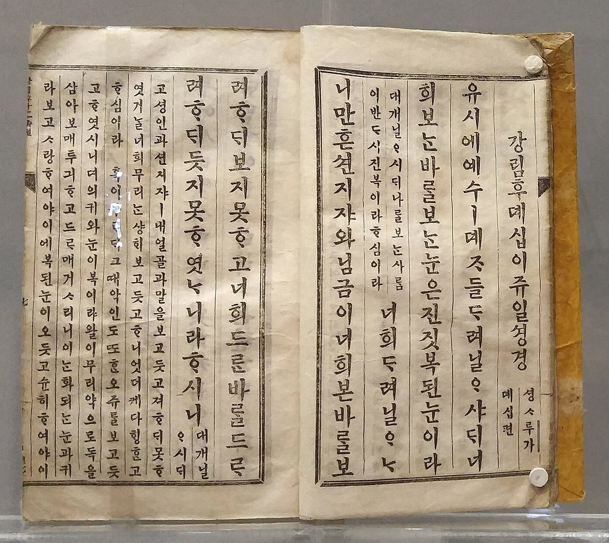
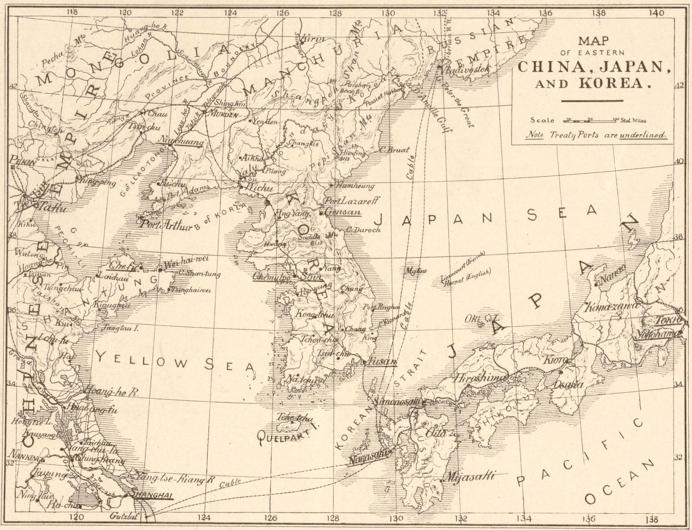
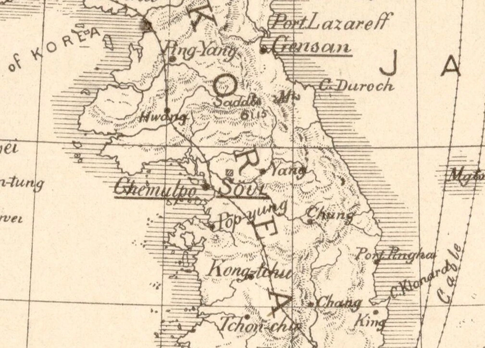
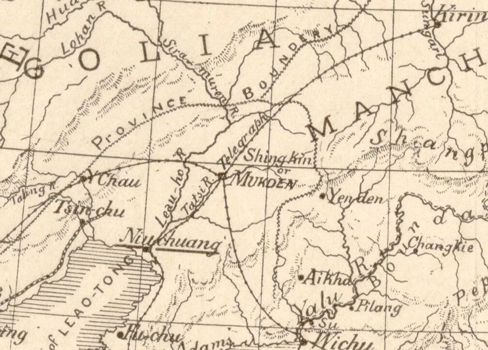

 아직 펼치지 않은 카드
아직 펼치지 않은 카드
1801년 한양, 관청이 천주교 신자들에게서 거둬 불태운 책의 목록에 한글로 옮긴 『성경직해』(주일과 축일에 읽는 복음을 풀어 쓴 책)가 적혔어요. 개신교 선교사가 이 땅에 들어온 1885년보다 80여 년 앞선 일이에요. 정중호의 『한국 성경 300년』을 따라, 성경이 우리말이 되기까지 거친 다섯 곳을 지도 위에서 따라가 보세요.
아주 옛날에도 한글로 옮긴 성경 책을 읽던 사람들이 있었대. 성경이 우리말이 되기까지 어떤 곳들을 거쳤는지 지도에서 따라가 볼까?
검수 전 시안이에요(기준서 1판). 곳마다 있었던 일은 한국민족문화대백과사전, 대한성서공회, 케임브리지 대학 도서관, 학술지 논문과 서평에 있는 것만 옮겼고, 기록마다 다른 것은 ‘기록마다 다른 점’에 적었어요. 지도는 미국 의회도서관의 19세기 말 옛 지도이고, 길과 점은 이 안내서가 그려 넣었어요. 상상은 ‘눈 감고 상상해 보기’에만 썼어요.
구약학자 정중호의 『한국 성경 300년』은 1900년까지 이 땅의 사람들이 성경을 어떻게 받아들이고, 옮기고, 풀이했는지 따라가는 책이에요. 서평은 이 책이 그 역사를 적어도 17~18세기까지 거슬러 올라가 본다고 소개해요. 이야기는 개신교 선교사가 오기 훨씬 전, 천주교 신자들이 한문 성경 책을 읽던 때부터 시작해요.
이 쪽은 1790년 베이징에서 다시 찍은 한문 『성경직해』예요. 주일(일요일)과 축일(교회가 기리는 날)에 읽는 복음서 구절을 옮기고 풀이한 책으로, 조선의 신자들은 이 책을 들여와 한글로 옮겨 베꼈어요.
저자는 동아시아 사람들이 한문으로 성경을 읽던 때를 ‘한문성경기’라 부르고, 1900년까지로 잡았어요. 한자를 우리 소리로 읽기(독음), 한문 사이에 우리말 토 달기(구결), 우리말로 풀어 옮기기(언해)처럼 그때 한문을 읽던 방법도 자세히 풀어요.
찍어 펴낸 한글 성경이 드물던 때라, 성경은 손으로 베끼고 입으로 외우며 퍼졌다고 저자는 힘주어 말해요.
이건 한자로 된 성경 풀이 책이야. 옛날 사람들은 이 책을 한글로 옮겨서 손으로 베껴 썼대.
물어보기책이 모자라면 어떻게 나눠 읽었을까?
정중호의 책이 다루는 300년 가운데 다섯 장면을 19세기 말의 옛 지도 위에 찍었어요. 베이징의 한문 책에서 시작해, 한양과 만주를 지나 바다 건너 요코하마까지 가요. 책 한 권이 여행한 길이 아니라, 300년 사이의 다섯 장면을 일어난 해 차례로 이은 길이에요.
‘다음 곳으로’를 눌러 따라가 보세요. 곳마다 그때 있었던 일이 열려요. 지도의 지명은 옛 영어 표기예요(베이징은 PEKIN, 한양은 Söul, 의주는 Wichu). 지도 위의 점선은 전신선(Telegraph · Cable)과 경계선이고, 길과 점은 이 안내서가 그려 넣었어요.
‘다음 곳으로’를 눌러, 성경이 우리말이 되기까지 거친 다섯 곳을 일어난 해 차례로 따라가 보세요.

베이징한양묵덴의주요코하마동아시아 옛 지도(19세기 말) · 미국 의회도서관 · 작가 모름 · 퍼블릭 도메인 · 위키미디어 공용(미국 의회도서관)
1885년 4월 5일 오후 세 시, 미국에서 온 개신교 선교사 언더우드와 아펜젤러가 이 마가복음 수십 권을 짐에 넣고 제물포(인천의 옛 항구)에 내렸어요. 1887년에는 로스와 조선 사람들이 옮긴 첫 우리말 신약 전체 『예수셩교젼셔』(옛 맞춤법 그대로예요)가, 1900년에는 『신약젼셔』가 나왔어요. 정중호의 책은 여기, 1900년까지 따라가요.
그동안의 한국 성경 번역사는 주로 개신교 번역만 다뤘는데, 이 책은 천주교 신자들의 번역과 개신교 선교사들의 번역을 한 흐름으로 함께 봐요. 대한성서공회 학술지의 서평은 한국교회 성경 번역의 역사를 처음부터 한 줄로 꿰어 본 드문 연구라며 반겼어요.
성경이 여러 곳을 거쳐서 우리말이 되었대. 지도에서 따라가 보자!
물어보기다섯 곳 가운데 우리 땅은 몇 곳일까?
눈 감고 상상해 보기
19세기 어느 산골 교우촌(천주교 신자들이 숨어 모여 살던 마을)의 주일 아침. 신부(천주교의 사제)가 오지 못하는 날이라, 작은 방에 사람들이 둘러앉아요. 신자들을 이끄는 회장이 손으로 베낀 한글 『성경직해』를 펼치고, 소리를 길게 끌며 천천히 읽어 내려가요. 글을 모르는 사람들도 그 소리를 귀에 담아, 일하면서 입속으로 되뇌어요.
눈을 감아 봐. 작은 방에 사람들이 둘러앉았어. 한 사람이 손으로 베낀 책을 노래하듯 읽어 줘. 다들 귀 기울여 따라 외워.
‘이 땅의 첫 우리말 성경’ 하면 전에는 어떤 장면이 떠올랐나요? 1801년 목록에 적힌 한글 『성경직해』를 알게 된 지금은요?
우리말 성경은 누가 처음 만들었다고 생각했어? 지금은 누가 떠올라?
마음에 닿는 한 줄을 고르거나 직접 써 보세요. 한 줄을 남기면 이 자리의 도장이 찍혀요. 이 기기에만 저장돼요.
이야기를 보다 궁금해질 만한 것들이에요. 답을 읽거나 짧은 영화로 보세요.



아직 펼치지 않은 이야기예요. 누르면 이야기가 펼쳐지고 색이 돌아와요. 더 알고 싶으면 근거를 따라가 보세요.
다 펼치면, 다음에 오실 때 새 이야기가 찾아와요.
오늘의 뒷이야기는 여기까지예요. 다음에 오시면 새 이야기가 기다리고 있어요.
펼친 뒷이야기 · 누르면 다시 볼 수 있어요
구약학자 정중호가 2022년 계명대학교출판부(대구)에서 펴낸 책이에요. 1부 ‘성경 수용의 여명기’, 2부 ‘17~18세기 성경 번역과 해석’, 3부 ‘19세기 성경 번역과 해석’으로 나뉘어요.
1부는 경교(당나라 때 중국에 전해진 그리스도교의 한 갈래)와 천주교가 동아시아에 온 이야기, 2부는 조선 천주교의 첫 번역, 3부는 19세기 천주교와 개신교의 번역을 다뤄요.
안교성은 『성경원문연구』 56호(2025년 4월) 서평에서 이 책을 한국교회 성경 번역사의 ‘이정표’가 될 귀한 연구라고 했어요. 한문 성경을 읽던 때를 ‘한문성경기’로 묶어 본 것을 이 책의 중요한 기여로 꼽았어요.
아쉬운 점도 함께 적었어요. 20세기 이후는 다루지 않고, 앞서 쓴 논문들을 바탕으로 해 겹치는 내용이 있으며, 1부는 새로운 사실을 내놓지는 않는다고 했어요. 몇몇 주장은 근거를 더 보여 주면 좋겠다고도 했어요.
‘손에 들고’ 내렸을까 언더우드와 아펜젤러가 이수정의 마가복음을 손에 들고 제물포에 내렸다는 이야기가 널리 알려져 있어요. 옥성득은 두 사람이 요코하마에서 이 책 수십 권을 받아 짐에 넣어 왔고, 흔히 알려진 것처럼 ‘손에 들고 내린’ 것은 아니었다고 적었어요.
만주어 성경의 몫 저자는 한국어와 가까운 만주어로 된 성경(쁘와로 신부가 옮긴 것)과 기독교 책이 한국 성경 번역에 얼마쯤 영향을 주었을 가능성을 짚어요. 서평은 그런 가능성이 아주 없지는 않지만 높아 보이지 않는다며, 사료로 보여 주어야 한다고 했어요.
한글 『성경직해』는 언제 다 되었나 1801년 목록에 이미 한글 『성경직해』의 이름이 있어요. 한국민족문화대백과사전은 이 필사본이 프랑스 선교사들이 복음 본문을 바로잡으며 1860년대에 완성되었을 것으로 보고, 뮈텔 주교가 펴낸 활판본(전 9권)의 해도 한 항목 안에서 1892~1895년, 1896년, 1897년으로 달리 적었어요.
지도의 때 미국 의회도서관과 위키미디어 공용의 기록은 이 지도를 1880년 것으로 적었어요. 그런데 지도에는 1883년 1월에 문을 연 제물포에 개항장(외국과 무역하도록 연 항구) 표시인 밑줄이 그어져 있어요. 그래서 이 카드는 ‘19세기 말 지도’라고만 적었어요.
베이징에서 요코하마까지 다섯 곳을 끝까지 따라가면 카드에 금박이 입혀져요.
아이와 함께 영화처럼 보기를 끝까지 보면 카드가 채색돼요.
‘처음 만나는 기독교 문화’의 깊은 카드예요. 카드 단계와 남긴 글은 이 기기에만 저장돼요.
영화처럼 보기 · 약 3분
화면을 누르거나 → 키를 누르면 넘어가요. 그냥 두어도 자막이 저절로 넘어가요.